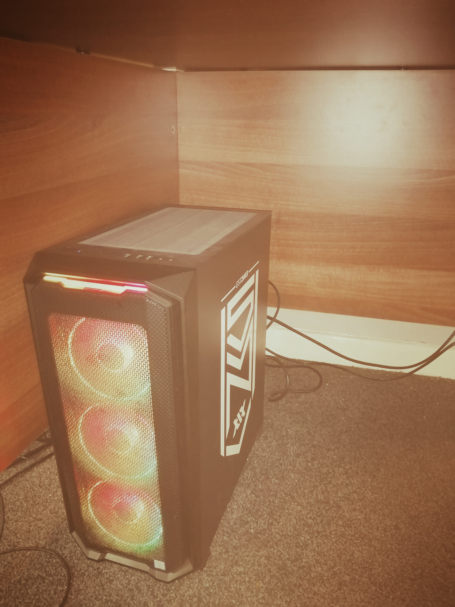

I have loved using computers my entire life. From an early age I combined my love of tech with music and began producing/recording music and learning musical instruments.
In 2020 I picked the parts for a new computer after my old PC of 8 years was out of action. I played rugby in my teens, but since adolesence hung up my boots for trainers to
play badmintion and rockclimb nowadays. I am learning Spanish, as I want to live there after the dust from covid has settled. Not only for the weather but for a chance to become
part of a different culture too reveal another side of myself. I want to one day use my techical knowledge to develop solutions to assist my own artistic endeavours and those of others.
I worked as a Software Appentice for a cyber security company in 2016. There I learnt about IP networks, validation testing, and how to use python to make tests.
After my time travelling I enrolled on a CodeNation course which revitalised my confidence in my abilities and passion for software. Below is a copy of my CV: